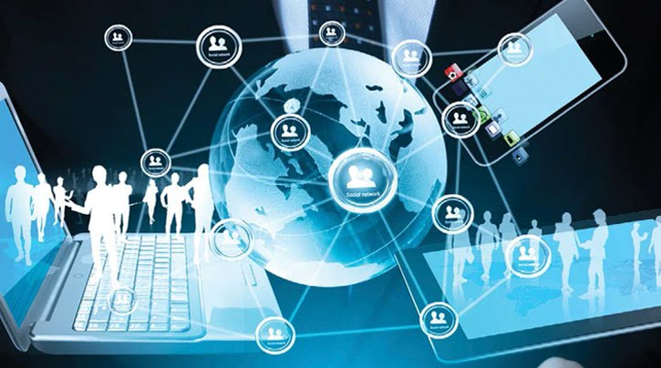
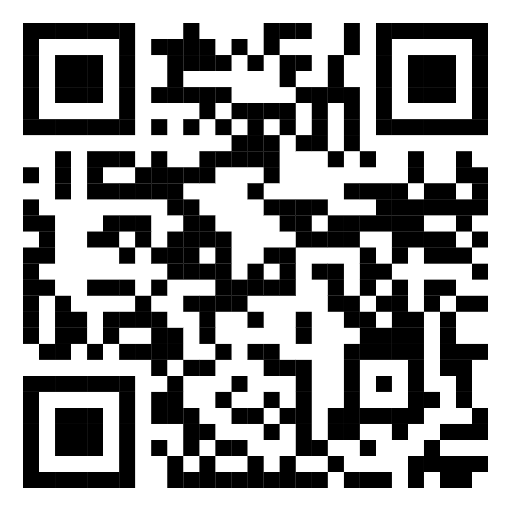

ความหมายของเทคโนโลยีสารสนเทศ
เทคโนโลยีสารสนเทศ คือ การประยุกต์ความรู้ทางวิทยาศาสตร์มาใช้ในระบบสารสนเทศ ตั้งแต่กระบวนการจัดเก็บ ประมวลผล และการเผยแพร่สารสนเทศ เพื่อช่วยให้ได้สารสนเทศที่มี ประสิทธิภาพและรวดเร็วทันต่อเหตุการณ์ โดยเทคโนโลยีสารสนเทศอาจประกอบด้วย
1. เครื่องมือและอุปกรณ์ต่างๆ เช่น เครื่องคอมพิวเตอร์ เครื่องใช้สำนักงาน อุปกรณ์สื่อสาร โทรคมนาคมต่างๆ งๆ รวมทั้งซอฟท์แวร์ทั้งแบบสำเร็จรูปและแบบพัฒนาขึ้นเพื่อใช้ในงานเฉพาะด้าน ซึ่งเครื่องมือเหล่านี้จัดเป็นเครื่องมือทันสมัย และใช้เทคโนโลยีระดับสูง (High Technology)
2. กระบวนการในการนำอุปกรณ์เครื่องมือต่างๆ ข้างต้นมาใช้งาน เพื่อรวบรวม จัดเก็บ ประมวลผล และแสดงผลลัพธ์เป็นสารสนเทศในรูปแบบต่างๆ ที่สามารถนำไปใช้ประโยชน์ได้ต่อไป เช่น การจัดเก็บ ข้อมูลในลักษณะของฐานข้อมูล เป็นต้น
องค์ประกอบของเทคโนโลยีสารสนเทศ
ฮาร์ดแวร์ Hardware
ฮาร์ดแวร์เป็นองค์ประกอบสำคัญของระบบสารสนเทศ หมายถึง เครื่องคอมพิวเตอร์ อุปกรณ์รอบข้าง รวมทั้งอุปกรณ์สื่อสารสำหรับ เชื่อมโยงคอมพิวเตอร์เข้าเป็นเครือข่าย ซึ่งถือว่าเป็นองค์ประกอบ ที่สำคัญของระบบสารสนเทศ
ส่วนประกอบของคอมพิวเตอร์
1. หน่วยรับข้อมูล (Input Unit)
2. หน่วยประมวลผลข้อมูล (Central Processing Unit: CPU)
3. หน่วยเก็บข้อมูล (Memary Unit)
4. หน่วยติดต่อสื่อสาร (Communication Unit)
5. หน่วยแสดงผล (Output Unit)
ส่วนประกอบภายนอกที่สำคัญของคอมพิวเตอร์ คือ อุปกรณ์คอมพิวเตอร์ที่นำมาประกอบกันแล้วจะได้ คอมพิวเตอร์ชนิดตั้งโต๊ะที่สมบูรณ์ 1 เครื่อง ควรประกอบด้วยองค์ประกอบที่สำคัญหลายอย่าง เช่น
– กล่องซีพียู (Case)
– แป้นพิมม์ (Keyboard)
– เมาส์ (Mouse)
– จอภาพ (Monitor)
– ลำโพง (Speaker)
– หน่วยความจำสำรอง (Secondary memory unit)
ซอฟต์แวร์ (Software)
ซอฟต์แวร์ หมายถึง โปรแกรมหรือชุดคำสั่งที่สั่งให้ คอมพิวเตอร์ทำงาน เป็นตัวสั่งการให้อุปกรณ์เชื่อมต่อ ทำงานได้ โดยโปรแกรมจะเขียนให้ทำงานเป็นขั้นตอน โดยจะครอบคลุมการดำเนินการทั้งหมดว่าจะให้ผลลัพธ์ ออกมาในลักษณะใด โดยผู้เขียนโปรแกรมหรือ โปรแกรมเมอร์จะเป็นผู้เขียนโปรแกรมกำหนดให้โปรแกรม รับอะไรมาประมวลผล แล้วให้ผลลัพธ์แสดงออกมา ในรูปแบบใดแบ่งเป็น 2 ประเภทคือ ซอฟต์แวร์ระบบ และซอฟต์แวร์ประยุกต์
- ซอฟต์แวร์ระบบ (System Software) คือ ชุดคำสั่ง หรือโปรแกรมที่ถูกเขียนขึ้นทำงานกับ ฮาร์ดแวร์เพื่อสั่งการควบคุมการทำงาน อำนวยความสะดวกให้ผู้ใช้สามารถติดต่อกับเครื่องคอมพิวเตอร์ และคอมพิวเตอร์ทุกเครื่องจะต้องมีระบบปฏิบัติการ (Operating System: OS) ระบบปฏิบัติการที่ใช้กัน ทั่วไป เช่น Windows XP, Windows 7, Windows 8 สำหรับเครื่อง Macintosh เช่น ระบบปฏิบัติการ Snow Leopard, Lion Mountain, Lion และยังมีระบบปฏิบัติการเปิด เช่น Linux Ubuntu เป็นต้น
- ซอฟต์แวร์ประยุกต์ (Application Software) คือ ชุดคำสั่ง หรือโปรแกรมที่ถูกสร้างขึ้นให้ใช้งานด้านต่าง ๆ ให้ได้ประโยชน์สูงสุดตามความต้องการของผู้ใช้งานโดยแบ่งออกเป็น 2 ประเภท คือ
1. ซอฟต์แวร์สำเร็จรูป (Package Program)
2. ซอฟต์แวร์เฉพาะด้าน (Special Purpose Software)
ผลกระทบของการใช้เทคโนโลยีสารสนเทศ
ปัจจุบันคอมพิวเตอร์และระบบสื่อสารใต้สร้างประโยชน์อย่างมากต่อวงการธุรกิจ ทำให้ทุกธุรกิจ มีการลงทุนขยายขอบเขตการให้บริการโดยใช้ระบบสารสนเทศกันมาก กลไกเหล่านี้ทำให้โอกาสในการ ขยายตัวของเทคโนโลยีสารสนเทศกว้างขวางเพิ่มขึ้น นอกจากนี้การเชื่อมโยงเครือข่ายคอมพิวเตอร์ทำให้ สังคมโลกเป็นสังคมแบบไร้พรมแดน การใช้งานเครือข่ายคอมพิวเตอร์ เช่น อินเทอร์เน็ตมีอัตราการ ขยายตัวสูงมาก ผู้คนบนโลกสามารถติดต่อสื่อสารกันผ่านทางเครือข่ายอินเทอร์เน็ตได้หมด
ผลกระทบในทางบวก
1. ช่วยส่งเสริมความสะดวกสบายของมนุษย์เทคโนโลยีสารสนเทศช่วยให้ความเป็นอยู่ของมนุษย์ดีขึ้น ช่วยส่งเสริมให้มี ประสิทธิภาพในการทำงาน ทำให้มนุษย์มีเวลาว่างเพื่อใช้ ในทางที่เกิดประโยชน์มากขึ้น มีเครื่องมือสื่อสารโทรคมนาคมสมัยใหม่ให้ติดต่อกันได้สะดวก มีระบบคมนาคมขนส่งที่ รวดเร็วสามารถใช้โทรศัพท์ในขณะเดินทางไปมายังที่ต่าง ๆ มีอุปกรณ์ช่วยอำนวยความ สะดวกที่ควบคุมด้วยคอมพิวเตอร์ เช่น ลิฟต์ เครื่องซักผ้า เครื่องปรับอากาศ เครื่องช่วย ให้เกิดการพักผ่อนหย่อนใจ เช่น วิทยุ โทรทัศน์ มีรายการให้เลือกชมได้มากมาย มีการ แพร่กระจายสัญญาณโทรทัศน์ผ่านดาวเทียม ทำให้ผู้ชมสามารถรับรู้ข่าวสารต่าง ๆ จาก ทั่วทุกมุมโลกได้อย่างรวดเร็วเหมือนอยู่ในเหตุการณ์
2.ช่วยทำให้การผลิตในอุตสาหกรรมดีขึ้นการผลิตสินค้าในปัจจุบันต้องการผลิตสินค้าจำนวนมาก มีคุณภาพมีมาตรฐาน ซึ่ง ในปัจจุบันใช้เครื่องจักรทำงานอย่างอัตโนมัติ สามารถทำงานได้ตลอด 24 ชั่วโมง สินค้าที่ได้มีคุณภาพและปริมาณพอเพียงกับความต้องการของผู้บริโภค ปัจจุบันมีความ พยายามที่จะสร้างหุ่นยนต์ให้เข้ามาช่วยในอุตสาหกรรมการผลิต เช่น การผลิตรถยนต์
3. ช่วยส่งเสริมให้เกิดการค้นคว้าวิจัยสิ่งใหม่เทคโนโลยีคอมพิวเตอร์และระบบสื่อสาร เช่น เครือข่ายคอมพิวเตอร์ช่วยให้งานค้น คว้าวิจัยในห้องปฏิบัติการวิจัยต่าง ๆ มีความก้าวหน้ายิ่งขึ้น คอมพิวเตอร์ช่วยงานคำนวณ ที่ซับซ้อน ซึ่งแต่ก่อนยากที่จะทำได้ เช่น งานสำรวจทางด้านอวกาศ งานพัฒนาคิดค้นผลิตภัณฑ์และสารเคมีต่างๆ ทำให้ได้สูตรยา รักษาโรคใหม่ๆ เกิดขึ้นมากมาย ปัจจุบันงาน ค้นคว้าวิจัยทุกแขนงจำเป็นต้องใช้คอมพิวเตอร์ ช่วยในการคำนวณต่างๆ นักวิจัย นักวิทยาศาสตร์ ใช้ประโยชน์จากคอมพิวเตอร์ในการจำลองรูป แบบของสิ่งที่มองไม่เห็นตัว ใช้ในการค้นหา ข้อมูลที่มีจำนวนมากและแพร่กระจายอยู่ทั่วโลก สามารถค้นหารายงานวิจัยที่มีผู้เคยทำ ไว้แล้วและที่เก็บไว้ในห้องสมุดต่าง ๆ ได้อย่างรวดเร็ว งานวิจัยต่าง ๆ มีความก้าวหน้า ยิ่งขึ้น เพราะเทคโนโลยีเข้าไปมีส่วนเกี่ยวข้องอยู่อย่างมาก
4. ช่วยส่งเสริมสุขภาพและความเป็นอยู่ให้ดีขึ้นคอมพิวเตอร์และอุปกรณ์ที่เกี่ยวกับเทคโนโลยีสารสนเทศ ทำให้กิจการด้านการ แพทย์เจริญก้าวหน้าขึ้นมาก เครื่องมือเครื่องใช้ทางการแพทย์ล้วนแล้ว แต่ใช้คอมพิวเตอร์ช่วยในการดำเนินการ ช่วยในการแปลผล มีเครื่อง ตรวจหัวใจที่ทันสมัย เครื่องเอกซเรย์ภาคตัดขวางที่ สามารถตรวจดูอวัยวะต่าง ๆ ของร่างกายได้อย่าง ละเอียด มีเครื่องมือตรวจค้นหาโรคที่ทันสมัย หรือแม้แต่การผ่าตัดก็มีเครื่องมือช่วย ในการผ่าตัดที่ทำให้คนไข้ปลอดภัยยิ่งขึ้น มีเครื่องคอยวัดและตรวจสอบสภาพการเปลี่ยน แปลงของร่างกายอย่างละเอียด ระบบการรักษาพยาบาลจากที่ห่างไกล เช่น คนไข้ อยู่ที่จังหวัดชายแดนและขาดแคลนแพทย์เฉพาะทาง แพทย์ผู้ทำการรักษาสามารถส่ง คำถามปรึกษากับแพทย์ผู้ชำนาญการเฉพาะได้ มีการรวบรวมความรู้ของแพทย์ผู้ชำนาญ การจัดสร้างเป็นฐานความรอบรู้ เพื่อใช้ประโยชน์ได้กว้างขึ้น นอกจากนี้ยังมีการพัฒนา เครื่องมือช่วยคนพิการต่าง ๆ เช่น การสร้างแขนเทียม ขาเทียม การสร้างเครื่องกระตุ้น หัวใจ สร้างเครื่องช่วยฟังเสียง หรือมีการพัฒนาเทคโนโลยีการปลูกถ่ายอวัยวะสำคัญต่าง ๆ รวมทั้งการผลิตยา และวัคซีนสมัยใหม่ด้วย
5. ช่วยส่งเสริมสติปัญญาของมนุษย์คอมพิวเตอร์มีจุดเด่นที่สามารถทำงานได้รวดเร็ว มีความแม่นยำ สามารถเก็บข้อมูลต่าง ๆ ได้มาก การแก้ปัญหาที่ ซับซ้อนบางอย่างกระทำได้ดี และรวดเร็ว งานบางอย่างถ้า ให้มนุษย์ทำอาจต้องเสียเวลา ในการคิดคำนวณตลอดชีวิต แต่คอมพิวเตอร์สามารถทำงาน เสร็จภายในเวลาไม่กี่ วินาที ดังนั้นจึงมีการนำคอมพิวเตอร์ มาจำลองเหตุการณ์ต่าง ๆ เพื่อให้มนุษย์หาทางศึกษาหรือแก้ไขปัญหาเช่น การจำลอง สภาวะของสิ่งแวดล้อม การจำลองระบบมลภาวะ จำลองการไหลของของเหลว การควบ คุมระบบการจราจร หรือแม้แต่การนำเอาคอมพิวเตอร์มาจำลองในสภาพที่เหมือนจริง เช่น จำลองการเดินเรือ จำลองการขับเครื่องบิน การขับรถยนต์ สิ่งต่าง ๆ เหล่านี้ทำให้ เหมือนจริงได้ หากมีการผิดพลาดก็ไม่ทำให้เกิดอันตราย คอมพิวเตอร์จึงเป็นเครื่องมือ ที่ช่วยในการเรียนรู้ของมนุษย์ได้ดี ปัจจุบันมีการนำบทเรียนมาไว้ในคอมพิวเตอร์เรียกว่า คอมพิวเตอร์ช่วยสอน (Computer Assisted Instruction : CAI) และคอมพิวเตอร์ยังเป็นเครื่องมือให้นักเรียน นิสิต นักศึกษา สมัยใหม่เชื่อมโยงติดต่อทางอินเทอร์เน็ต สามารถเรียก ค้นข้อมูลข่าวสารผ่านทางเครือข่าย สามารถเรียนรู้การใช้ คอมพิวเตอร์หรือเรียนจากที่ห่างไกลได้ ถือเป็นหนทางที่ทำให้เกิดสติปัญญาอย่างแท้จริง
6. เทคโนโลยีสารสนเทศช่วยให้เศรษฐกิจเจริญรุ่งเรืองเทคโนโลยีจำเป็นต่ออุตสาหกรรม กิจการค้า ธุรกิจต่าง ๆ กิจการทางด้านธนาคาร ช่วยส่งเสริมงานทางด้านเศรษฐกิจ ทำให้กระแส เงินหมุนเวียนได้อย่างกว้างขวาง ผู้ผลิตในสายอุตสาหกรรม จะผลิตสินค้าได้มาก ลดต้นทุน ผู้บริโภคก็มีกำลังในการจับ จ่ายใช้สอยมาก ธุรกิจโดยรวมจำเป็นต้องอาศัยการแลก เปลี่ยนข้อมูลระหว่างกัน มีการสื่อสารเกี่ยวข้องกัน เกิด ระบบการแลกเปลี่ยนข้อมูลทางอิเล็กทรอนิกส์
7. ช่วยให้เกิดความเข้าใจอันดีระหว่างกันการสื่อสารโทรคมนาคมสมัยใหม่ช่วยย่นย่อโลกให้เล็กลง โลกมีสภาพไร้พรมแดน มีการเรียนรู้วัฒนธรรมซึ่งกันและกันมากขึ้น เกิดความเข้าใจอันดีระหว่างกัน ทำให้ลดปัญหาใน เรื่องความขัดแย้ง สังคมไร้พรมแดนทำให้มี ความเป็นอยู่แบบรวมกลุ่มประเทศมากขึ้น
8. ช่วยส่งเสริมประชาธิปไตยในการเลือกตั้งสมาชิกสภาผู้แทนราษฎร มีการใช้เทคโนโลยีสารสนเทศเพื่อกระจายข่าวสาร เพื่อให้ประชาชนได้เห็นความสำคัญของกระจายระบบ ประชาธิปไตย แม้แต่การเลือกตั้งก็มีการใช้คอมพิวเตอร์รวมผล คะแนน ใช้สื่อโทรทัศน์วิทยุแจ้งผลการนับคะแนนที่ทำให้ทราบ ผลได้รวดเร็ว

ผลกระทบในทางลบ
1. ทำให้เกิดอาชญากรรมเทคโนโลยีสารสนเทศสามารถนำมาใช้ในการก่อให้เกิดอาชญากรรมได้ โจรผู้ร้ายใช้เทคโนโลยีสารสนเทศในการวางแผนการปล้น วางแผนการ โจรกรรม มีการลักลอบใช้ข้อมูลข่าวสาร มีการโจรกรรมหรือแก้ไขตัวเลข บัญชีด้วยคอมพิวเตอร์ การลอบเข้าไปแก้ไขข้อมูลอาจทำให้เกิดปัญหาหลาย อย่าง เช่น การแก้ไขระดับคะแนนของนักเรียน การแก้ไขข้อมูลในโรงพยาบาล เพื่อให้การรักษาพยาบาลคนไข้ผิด ซึ่งเป็นการทำร้ายหรือฆาตกรรมดังที่เห็นใน ภาพยนตร์
2. ทำให้ความสัมพันธ์ของมนุษย์เสื่อมถอยการใช้คอมพิวเตอร์และอุปกรณ์สื่อสารทำให้สามารถติดต่อสื่อสารกันได้โดยไม่ต้องเห็นตัว การใช้งานคอมพิวเตอร์หรือแม้แต่การเล่นเกมที่มี ลักษณะการใช้งานเพียงคนเดียว ทำให้ความสัมพันธ์กับผู้อื่นลดน้อยลง ผลกระทบนี้ทำให้มีความเชื่อว่า มนุษยสัมพันธ์ของบุคคลจะน้อยลง สังคมใหม่จะเป็นสังคมที่ไม่ต้องพึ่งพาอาศัยกันมาก
3. ทำให้เกิดความวิตกกังวลผลกระทบนี้เป็นผลกระทบทางด้านจิตใจของกลุ่มบุคคลบางกลุ่มที่มีความวิตกกังวลว่าคอมพิวเตอร์อาจทำให้คนตกงานมากขึ้น มีการใช้งานหุ่นยนต์ มาใช้งานมากขึ้น มีระบบการผลิตที่อัตโนมัติมากขึ้น ทำให้ผู้ใช้ แรงงานอาจว่างงานมากขึ้น ซึ่งความคิดเหล่านี้จะเกิดกับบุคคล บางกลุ่มเท่านั้น แต่ถ้าบุคคลเหล่านั้นสามารถปรับตัวเข้ากับเทคโนโลยี หรือมีการพัฒนา ให้มีความรู้ความสามารถสูงขึ้นแล้วปัญหานี้จะไม่เกิดขึ้น
4. ทำให้เกิดความเสี่ยงภัยทางด้านธุรกิจธุรกิจในปัจจุบันจำเป็นต้องพึ่งพาอาศัย เทคโนโลยีสารสนเทศมากขึ้น ข้อมูลข่าวสาร ทั้งหมดของธุรกิจฝากไว้ในศูนย์ข้อมูล เช่น ข้อมูลลูกหนี้การค้า ข้อมูลสินค้า และบริการ ต่าง ๆ หากเกิดการสูญหายของข้อมูล อันเนื่อง มาจากเหตุอุบัติภัย เช่น ไฟไหม้ น้ำท่วม หรือ ด้วยสาเหตุใดก็ตามที่ทำให้ข้อมูลหายย่อมทำ ให้เกิดผลกระทบต่อธุรกิจโดยตรง
5. ทำให้การพัฒนาอาวุธมีอำนาจทำลายสูงมากขึ้นประเทศที่เป็นต้นตำรับของเทคโนโลยี สามารถนำเอาเทคโนโลยีไปใช้ ในการสร้างอาวุธที่มีอานุภาพการทำลายสูง ทำให้หมิ่นเหม่ต่อสงครามที่มี การทำลายสูงเกิดขึ้น
6. ทำให้เกิดการแพร่วัฒนธรรมและกระจายข่าวสารที่ไม่เหมาะสมอย่างรวดเร็วคอมพิวเตอร์เป็นอุปกรณ์ที่ทำงานตามคำสั่งอย่างเคร่งครัด การนำมาใช้ ในทางใดจึงขึ้นอยู่กับผู้ใช้ จริยธรรมการใช้คอมพิวเตอร์ซึ่งเป็นเรื่องสำคัญดังเช่น การใช้งานอินเทอร์เน็ตมีผู้สร้างโฮมเพจหรือสร้างข้อมูลข่าว สารในเรื่องภาพที่ไม่เหมาะสม เช่น ภาพอนาจาร หรือภาพที่ทำให้ ผู้อื่นเสียหาย นอกจากนี้ยังมีการปลอมแปลงระบบจดหมาย เพื่อส่ง จดหมายถึงผู้อื่นโดยมีเจตนากระจายข่าวที่เป็นเท็จ ซึ่งจริยธรรมการ ใช้งานเครือข่ายเป็นเรื่องที่ต้องปลูกฝังกันมาก
แบบทดสอบหลังเรียน
